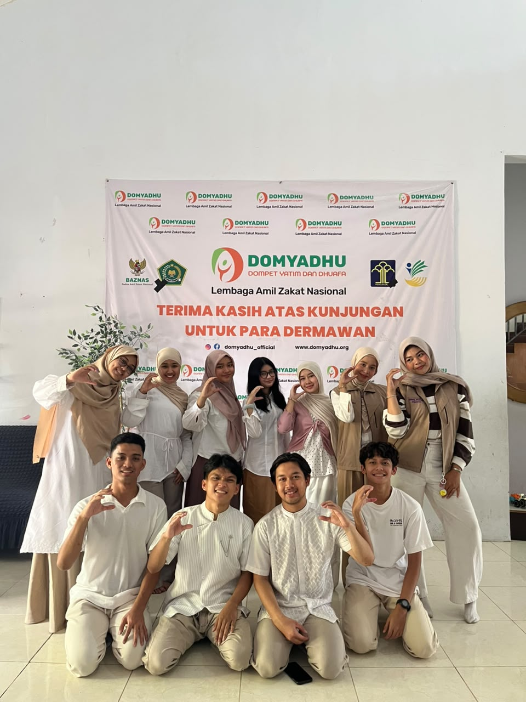

Training ESQ
Training ESQ
Amazing You 6
Memenuhi kebutuhan konsumsi untuk para panitia selama 1 hari.
6.000 peserta1 hari
Mahasiswa Aktif, Event Organizer, dan Penggerak Komunitas.
Aku suka membuat banyak hal: merancang acara, memimpin organisasi, dan terlibat di proyek sosial. Halaman ini merangkum kegiatan dan pencapaianku sejauh ini.
 AFZ
AFZ
Aku merupakan mahasiswa yang sangat senang bekerja di balik layar maupun di tengah keramaian.
Mulai dari menyusun konsep, mengatur timeline, berkomunikasi dengan banyak pihak, sampai memastikan acara berjalan rapi—aku menikmati prosesnya.
Di luar event, aku aktif di organisasi, kegiatan sosial, dan berbagai proyek yang membuatku terus belajar.
Training ESQ
Memenuhi kebutuhan konsumsi untuk para panitia selama 1 hari.
 Organisasi Kampus
Organisasi Kampus
Menyusun program dan mengkoordinasikan pelaksanaan acara khataman
 Komunitas
Komunitas
Mengemban peran sebagai MC dalam acara pengajian.
 Volunteer
Volunteer
Menyusun program dan mengkoordinasikan pelaksanaan acara camping
 Seni Pertunjukan Teater
Seni Pertunjukan Teater
Mengkoordinasikan sound dan audio selama pertunjukan teater.

Organisasi KampusMengelola dan mengkoordinasikan proyek sosial yang dilaksanakan di kampus
 Volunteer
Volunteer
Mengkoordinasikan peserta untuk melakukan sesi coaching dengan para coach profesional
 Training
Training
Mengfasilitasi kegiatan pelatihan untuk anak-anak.
 Volunteer
Volunteer
Mengelola logistik selama keberlangsungan kegiatan
Diamanahkan sebagai wakil ketua di organisasi kampus
Juara 1 pada kompetisi esai tingkat nasional.
Ada peluang kolaborasi, proyek, atau sekadar ingin berkenalan? Hubungi aku lewat salah satu kontak ini.